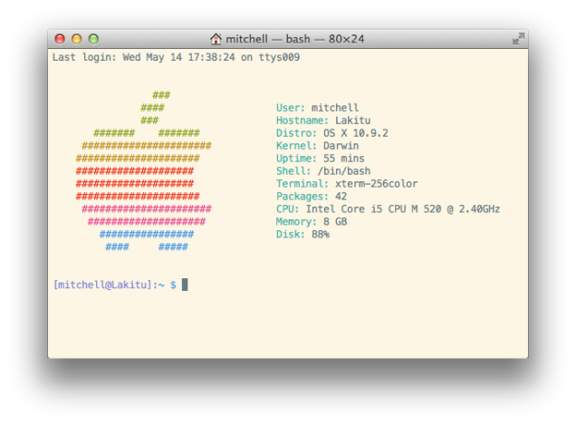

Introduction to Web Design and Computer Principles
CSCI-UA.0004-002
Mehan Jayasuriya
Week 2, 9/8/15
Today's Agenda:
- What is an operating system?
- What is UNIX?
- Using the terminal
- SSH
- NYU i6
- Basic UNIX commands
- UNIX permissions
What is an operating system?
Operating systems you might use

What does the OS do?
A lot of things have operating systems
UNIX is one of the oldest operating systems
You might be using UNIX right now
Let's fire up the terminal and use some basic UNIX commands
Unix commands
- cd: change directory
- ls: list
- mkdir: make directory
- cp: copy
- pwd: see current directory
- rm: remove
- chmod: change permissions
What is SSH?
What is NYU's i6 server?
Let's log into our i6 account
What we just did
ssh netID@i6.cims.nyu.edu
[enter password]
ls
cd [directory]
logout
UNIX permissions
Types of permissions
- r: read
- w: write
- x: execute
- -: no access
Types of users
- u: user (i.e. you)
- g: group (i.e. our class)
- o: other (i.e. the world)
Converting permissions to decimals
Putting it all together

Wow that was really confusing
Permissions you'll use most often:
- 755: you have all rights, group and world can only read and execute (standard for directories)
- 644: you can read and write, everyone else can only read (standard for files)
- 777: everyone has all rights
- 700: you have all rights, everyone else has none